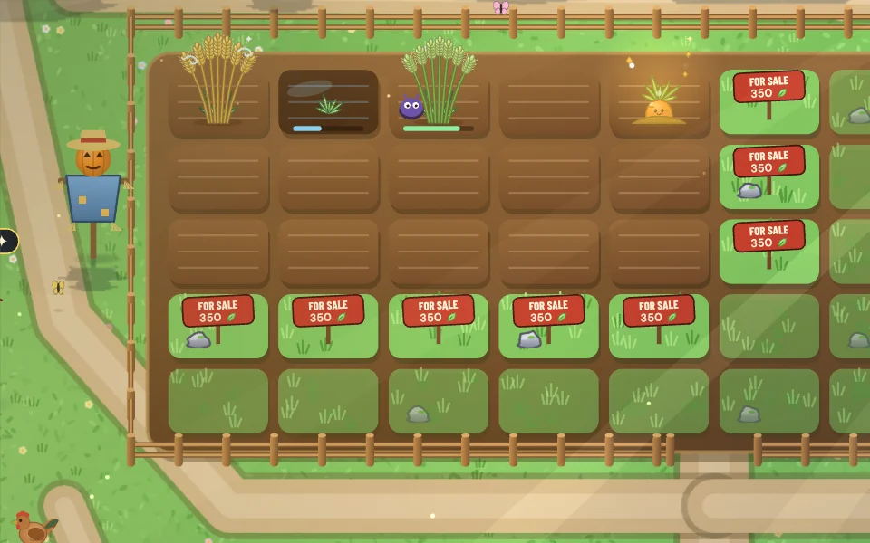
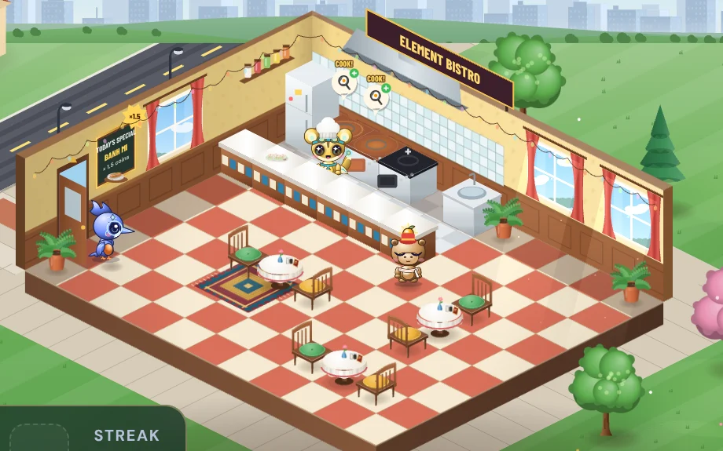

Một góc Farm và một góc Bistro, vẽ lại theo hai hướng hình ảnh bằng
Canvas 2D thuần (không thư viện). Cột trái là ảnh chụp game hiện tại
từ test hình. Kéo thanh giờ để xem bóng đổ đổi theo mặt trời, dùng
đúng công thức sunLight và lớp bóng của
world-light.ts.


Máy test: container đám mây, 4 nhân Xeon 2,1 GHz, Chromium 153 headless, không có GPU (WebGL báo SwiftShader, tức vẽ bằng CPU). Số mili-giây ở đây chậm hơn điện thoại thật nhiều lần, nên chỉ dùng để so tương đối giữa các cách vẽ. Mỗi số là trung vị của 40 frame; sau mỗi frame đọc 1 điểm ảnh để trình duyệt vẽ xong thật rồi mới dừng đồng hồ. Canvas 1440×900 (1,30 triệu điểm ảnh, gần bằng màn 844×390 ở ×2).
| Cảnh | Cách vẽ | ms/frame (trung vị) | p90 | drawImage/frame | fill/stroke/frame |
|---|---|---|---|---|---|
| Farm A | Vẽ trực tiếp | 83,2 | 117,4 | 67 | 4 975 |
| Farm A | Nướng sẵn (như game) | 14,2 | 15,6 | 110 | 2 |
| Farm A | Nướng cả bóng | 8,3 | 12,0 | 109 | 2 |
| Farm A | Nướng sẵn · Thấp | 7,8 | 8,8 | 43 | 2 |
| Farm B | Vẽ trực tiếp | 38,2 | 42,9 | 67 | 2 114 |
| Farm B | Nướng sẵn (như game) | 15,2 | 20,1 | 110 | 2 |
| Farm B | Nướng cả bóng | 7,7 | 9,5 | 109 | 2 |
| Farm B | Nướng sẵn · Thấp | 6,5 | 8,5 | 43 | 2 |
| Bistro A | Vẽ trực tiếp | 41,6 | 43,1 | 13 | 480 |
| Bistro A | Nướng sẵn (như game) | 15,1 | 17,2 | 20 | 6 |
| Bistro A | Nướng cả bóng | 9,4 | 11,2 | 19 | 6 |
| Bistro A | Nướng sẵn · Thấp | 7,7 | 8,8 | 7 | 6 |
| Bistro B | Vẽ trực tiếp | 25,7 | 31,3 | 13 | 509 |
| Bistro B | Nướng sẵn (như game) | 15,5 | 18,5 | 20 | 6 |
| Bistro B | Nướng cả bóng | 11,2 | 12,7 | 19 | 6 |
| Bistro B | Nướng sẵn · Thấp | 7,3 | 7,5 | 7 | 6 |
bistro-art.ts, hàm
sprite()); phần vẽ path đến từ thứ khác, bước này
chưa tách ra.
| Canvas | Cách vẽ | ms trung vị | p90 | drawImage | fill/stroke |
|---|---|---|---|---|---|
| Chưa đo trên máy này. | |||||
| Phần hình | Cách làm | Lý do và số đo |
|---|---|---|
| Vân cỏ, đất, gỗ, đá, gạch; bóng góc (AO) dưới vật đứng yên | Nướng vào nền, như canvas nền Plaza/Farm đang làm | Vẽ trực tiếp vân cỏ Painted tốn 83 ms/frame so với 14 ms khi nướng. AO đứng yên thì nướng vào nền là miễn phí mỗi frame. |
| Vật đứng yên (cây, hàng rào, luống, đồ gỗ) kèm vân và hạt giấy | Sprite nướng (GFX.sprite như hiện nay) |
Game đã làm vậy; hướng mới chỉ thêm chi tiết lúc nướng, không thêm lệnh vẽ mỗi frame. |
| Viền sáng phía mặt trời | Nướng vào sprite theo khoảng giờ (vd. mỗi 30 phút game), chỉ giữ bản của giờ hiện tại | Bản mẫu vẽ viền bằng 1–2 drawImage riêng mỗi vật (farm: 109 so với 43 khi Thấp) và tốn gấp 4 bộ nhớ. Giờ trong game chạy theo đồng hồ thật nên đổi rất chậm, nướng lại theo khoảng là đủ. |
| Bóng đổ của vật đứng yên |
Một canvas bóng theo toạ độ thế giới, nửa độ phân giải, vẽ lại
mỗi 5 phút game; thú, người chơi và đồ đang kéo vẫn dùng
ShadowLayer mỗi frame
|
"Nướng cả bóng" giảm frame Farm từ 14–15 ms xuống khoảng 8 ms (khoảng 40–50%). Kích thước ước tính: Farm 1240×730 (3,6 MB), Plaza 1350×850 (4,6 MB). |
| Vệt nắng qua cửa sổ Bistro, màu giờ vàng | Vẽ trực tiếp (1–2 hình, 2 lớp phủ toàn màn) | Rẻ về lệnh vẽ nhưng mỗi lớp phủ toàn màn tốn thêm một lượt tô mọi điểm ảnh; tắt ở Thấp. |
| Chi tiết khi phóng to (zoom) | Một ô vân 256×256 lặp phủ lên nền theo độ phân giải màn hình | Nền Farm nướng ở ×1 thế giới (2480×1460, 14,5 MB) mà điện thoại phóng tới 2,4 lần, nên vân nướng sẵn sẽ mờ. Nướng nền ×2 thì 58 MB, không vừa iPhone. Ô vân phủ đo được thêm khoảng 3 ms trên 1,3 triệu điểm ảnh ở máy test (khoảng +55% so với chỉ vẽ nền). |
| Thú, nhân vật, cây đung đưa, hiệu ứng | Không nướng được | Giữ như hiện nay. |
Nét vẽ tay mềm: không viền đen, vệt cọ trên cỏ và đất, bóng ngả tím lạnh, ánh nắng vàng ấm, hạt giấy nhẹ, viền sáng mềm.
Ưudocs/painted-world-materials.md).
Mô hình đồ chơi bóng bẩy: viền tối mảnh, cạnh vát sáng, điểm bóng loáng, đá mài mặt, gạch men có vệt phản chiếu, bóng góc gọn.
Ưufarm-gfx.ts:
"soft toy-like shapes, gentle dark outlines"), sửa từng vật
được, không cần đổi hết một lần.
Ước lượng thô theo ngày làm (một người cùng AI), dựa trên lượng mã
vẽ hiện có: farm-gfx.ts 2 760 dòng (nhà, cây, đồ, thú
của Plaza và Farm), crop-art.ts 1 929,
bistro-art.ts 2 732, bistro-furniture.ts 2
598, bistro-scenery.ts 1 166. Chưa tính tướng, boss,
giao diện. Chưa có dữ liệu để kiểm chứng con số này.
| Phần việc | A (ngày) | B (ngày) |
|---|---|---|
| Nền tảng chung: bộ chất liệu (vân, gỗ, đá, đất, gạch), nướng viền sáng theo giờ, AO, canvas bóng theo thế giới, ô vân zoom, mức Thấp, test ngân sách vẽ | 5–7 | 4–6 |
| Farm: nền, luống (ướt, bón phân, khoá, khổng lồ), cây trồng mọi giai đoạn, nhà, chuồng, thú | 9–12 | 5–7 |
| Plaza: nền 2700×1700, đài phun, toà nhà, đồ trang trí | 6–8 | 4–5 |
| Bistro: các kiểu sàn và tường, nội thất mọi hướng xoay, phố bên ngoài, vệt nắng cửa sổ, bóng theo giờ (hiện Bistro chưa có) | 8–11 | 5–7 |
| Chỉnh cho đồng bộ, chụp lại test hình, đo trên máy thật | 4–6 | 3–4 |
| Tổng | 32–44 | 21–29 |
docs/network-performance.md
mục 5 và 8 nói vậy cho trận đấu). Ở Thấp nên tắt hết, chỉ giữ AO
đã nướng.
soft-light và
multiply. Chưa đo trên máy thật xem chúng có chậm hơn
trộn thường không; nếu chậm, đổi sang một lớp màu thường có độ mờ.
requestIdleCallback như game đã làm khi trả nền.
?perf=1 trong game.
Chọn B · Crisp toy làm gốc và mượn ba thứ của A: bóng ngả màu lạnh thay vì xám, ánh nắng ấm và màu giờ vàng, AO mềm dưới mọi vật. Lý do: gần nét hiện tại nên áp dụng dần được, dễ đọc trên điện thoại ngang, ít rủi ro máy cũ hơn, và khoảng 2/3 công sức của A. Nếu chủ game muốn hẳn cảm giác tranh vẽ, A khả thi về hiệu năng khi nướng sẵn, nhưng nên có hoạ sĩ vẽ ô vân và vài vật mẫu trước.
Lưu ý khi xem: bản mẫu hiện góc gần hơn khung game thường thấy, nên chi tiết dễ thấy hơn. Nên duyệt lại ở đúng mức zoom của game trong bước áp dụng.
Mạng của máy làm việc chặn các trang này nên tôi không mở được toàn văn. Các ý dưới đây lấy từ đoạn trích trên kết quả tìm kiếm; ý nào không có nguồn thì ghi rõ.
| Kỹ thuật | Điều nguồn nói | Áp dụng trong bản mẫu |
|---|---|---|
| Viền sáng (rim light) | Hướng dẫn 2D lighting của Unity: nhân vật thường có viền sáng quanh hình để dễ đọc khi di chuyển, nhất là game nhìn từ trên xuống; có thể dùng mask để chọn chỗ có viền [1]. Một thảo luận trên diễn đàn Spine thấy normal map làm nhân vật quá tròn và thích viền kiểu hoạt hình hơn [2]. | Viền sáng nướng sẵn theo 3 hướng, trộn theo vị trí mặt trời; không dùng normal map. |
| Không vẽ chết bóng vào sprite nếu có ánh sáng động | Bài Dragon Crashers của Unity khuyên không tô sẵn sáng tối vào sprite khi dùng nhiều ánh sáng 2D [3]. | Bản mẫu vẫn tô sẵn sáng từ trên (ánh sáng chính không đổi) và chỉ để bóng đổ, viền sáng, màu giờ thay đổi theo giờ. |
| Bóng góc (AO) | AO là bóng tiếp xúc ở chỗ các mặt gần nhau (sàn gặp tường, khe, kẽ nứt) [4]; AO hay bóng thời gian thực rất tốn hiệu năng nên thường nướng sẵn [5]. | AO dưới vật và chân tường nướng vào nền. |
| Nướng sẵn trên canvas | MDN: vẽ trước các thứ lặp lại lên canvas ngoài màn hình, làm tròn toạ độ, tách lớp tĩnh và động [6]. web.dev: lợi ích của canvas ngoài màn hình có thể mất vì chép canvas lớn, tuỳ kích thước nguồn và đích [7]. | Nền, vật và viền nướng sẵn; "Nướng cả bóng" gộp bóng tĩnh vào nền. Ghi chú bộ nhớ ở trên là do điểm của web.dev. |
| Bảng màu, phong cách | Hay Day chọn phong cách có chủ ý, "kiểu thập niên 1950", hơi khác thường thay vì chỉ dễ thương [8][9]. Không tìm được nguồn nói Hay Day làm hình bằng cách nào (vẽ tay hay dựng 3D rồi xuất ảnh), nên tôi không khẳng định. | Chỉ dùng làm định hướng: mỗi hướng có bảng màu riêng nhất quán. |
| Sáng ấm, bóng lạnh (hue shift) | Chưa xác minh bằng nguồn trong bước này; đây là kinh nghiệm vẽ tranh phổ biến. | Hướng A pha bóng về tím xanh, sáng về vàng. |